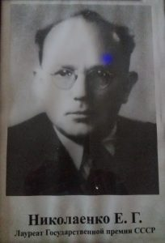
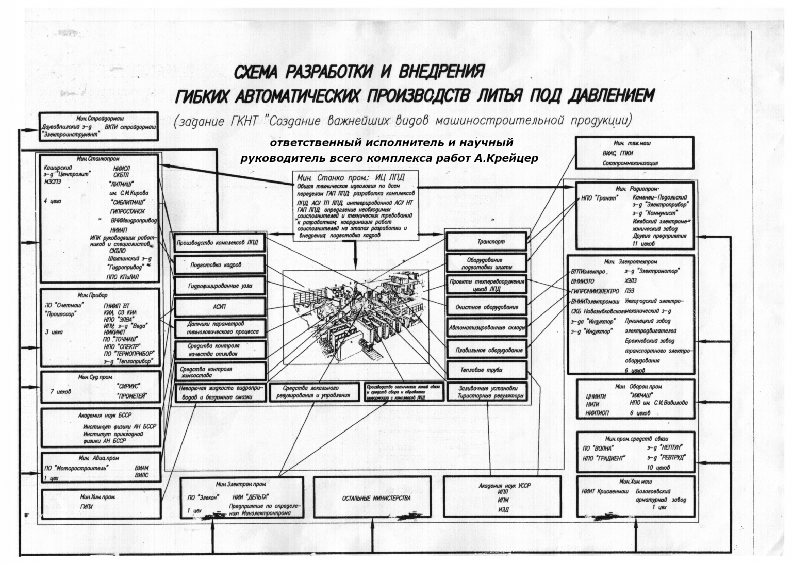

История начинается с 1951 года, когда приказом Совета Министров СССР было создано ЦКТБ специальных способов литья, Директором назначен лауреат Государственной Премии НИКОЛАЕНКО ЕВГЕНИЙ ГРИГОРЬЕВИЧ. Под его руководством ЦКТБ была реорганизована в Научно Исследовательский Институт Специальных Способов литья (НИИСЛ ), в составе института и опытного завода, а позднее, в 1990 года в составе из трех Государственных предприятий: институт НИИСЛ, опытный завод и Инженерный Производственно-научный Центр Литья Под Давлением (ИЦЛПД).
Особо значимые результаты научных внедрений:
-
создание технологического процесса и производства непрерывной разливки кровельного листа из серого чугуна – основание создания ЦКТБ;
-
автоматизированный цех высокопрочного чугуна, стоек тракторных плугов мощностью 16 000 тонн\год, замена материала (сталь на высокопрочный чугун), Одесса, завод Октябрьской Революции;
-
автоматизированный цех высокопрочного чугуна литья в облицованный кокиль тракторных коленвалов, Харьков, завод Серп и Молот. Удостоен Государственной премии СССР;
-
автоматизированный цех кокильного литья корпусов и подшипниковых щитов электродвигателей на заводе ВОЛЬТА, г. Таллин;
-
гибкое автоматическое производство литья под давлением –программа ГКНТ СССР по созданию важнейших видов передовых технологических процессов. Впервые создан проект полной автоматизации, без участия человека, в операциях производственного цикла. В работе принимали участие ведущие академические и отраслевые институты страны:
 -
модернизация импортного оборудования по выплавляемым моделям для производства лопаток турбин с институтом ИЖСТАЛЬ и Ижевским МЕХАНИЧЕСКИМ ЗАВОДОМ.
Кроме того с последним предприятием создан технологический процесс литья под давлением корпусов компрессора автомобиля КАМАЗ на конвейер основного производства.
Большой объем работ проведен по перевооружению морально и физически изношенных производств общего машиностроения, в том числе спецтехники;
Особое внимание заслуживают работы по технологии и оборудованию непрерывного горизонтального литья черных и цветных сплавов. Девять линий непрерывного горизонтального литья чугунов с отработанной технологией введены в эксплуатацию на предприятиях Украины, России, Белоруссии и Грузии.
Для исследования и отработки технологии по созданию и освоению производства полых непрерывно-литых заготовок из спецлатуни для холодной прокатки труб теплообменников турбогенераторов АЭС. Создана экспериментальная линия непрерывного литья. В течение 3-х лет на этой линии с Никопольским Южнотрубным заводом была отработана технология получения трубных заготовок без дефектов. На созданную технологию получено четыре Государственных Патента.
Многолетний опыт работ, в том числе с ЮУАЭС, позволил установить причины низких механических свойств и преждевременного износа конденсаторных труб из спец-латуни и электровыключателей из меди, из-за чего возникают аварийные отключения турбогенераторов АЭС и как следствие – миллиардные потери денежных средств. Впервые в СНГ на Украине выполнен комплекс НИОКР по созданию оборудования и технологии горизонтального непрерывного литья трубных и сплошных заготовок для конденсаторных труб и спец-втулок с требуемой структурой металла, аналог технологии Германии. Проведенный на НЮТЗ, полный комплекс испытаний показал, что новая технология обеспечивает высокие механические свойства (прочность, пластичность, износостойкость и срок службы), которые в два и более раз превышают стандартные показатели (исполнитель к.т.н. Михайлык М.). Это позволяет получить высококачественные холоднодеформируемые трубы и другие изделия. Затраты на производство в десятки раз меньше существующих.Технология востребована договорами Украины ( ЮУАЭС, НЮТЗ, ЮЖМАШ и др.).
Заслуживают внимания научные и конструкторские работы по модернизации импортного оборудования литья под давлением и термопластавтоматов на ОАО «МОТОР СИЧ». Новые узлы прессования исключающие гидравлический удар, средства управления на контроллерах фирмы Сименс, контроль статических и динамических параметров техпроцесса, переработка гидрооборудования с использованием комплектации ведущих фирм Европы и отработка техпроцессов. Изготовление прессформ.
В 2017 году приказом первого вице премьер-министра Украины – Министра экономического развития Украины и Министра просвещения и науки, имущество ИЦ ЛПД было передано в Одесский национальный политехнический УНИВЕРСИТЕТ. Приказом ректора при кафедре технологии и управления литейными процессами создана учебно-экспериментальная лаборатория специальных способов литья «НИЛ ССЛ»
НИЛ ССЛ по утвержденному плану аспирантуры выполнила и представила на защиту кандидатской диссертации работу по защите магниевых сплавов от возгорония и окисления. Вновь созданный технологический процесс резко повышает герметичность защитной газовой пленки и резкое снижение расхода активных газов, резко повышает качество сплава за счет снижения неметаллических включений. Технологический процесс апробирован на производстве при выпуске установочной партии отопительных приборов. Исполнитель Крейцер К., аспирант кафедры.
НПО НИИСЛ выделялось среди научных организаций высоким уровнем
творческих специалистов: доктора и кандидаты технических наук,
лауреаты союзных и республиканских Государственных премий,
изобретатели и авторы научных работ, уникальных специалистов
рабочих специальностей:
Е.Николаенко, Р.Снежной,
Л.Кагане, С.Бураков, А.Теплинский, Я.Рывкис, Л.Нетес, А.Юрченко,
.Микотин, .Яровинский, И.Тесля, И.Буяджи, В.Майблюм, Н.Зинкевич,
В.Стрельцов, .Серебро, Н.Саников, А.Куперман, Г.Дятленко,
А.Мирошниченко, Гетьман, И.Тарасов, В.Гребенников, Т.Лысенко,
А.Становский, В.Тонконогий, Б.Тимофеев, Ю.Сенкевич, Г.Царев,
В.Куценко, М.Михайлык, Р.Кононыхина, В.Бахчеван, А.Яновский,
Б.Британов, А.Крейцер, В.Семенов, Д.Волынский, Д.Ясский,
Ю.Карбовский, Барсуков, А.Навотный, А.Тризна, С.Сорокотяж,
Ю.Краснянский, Е.Шицман, В.Кучер, И. Каневский В.Клейнер,
А.Назаренко, А.Артеменко, О.Хитров, В.Гильченко.